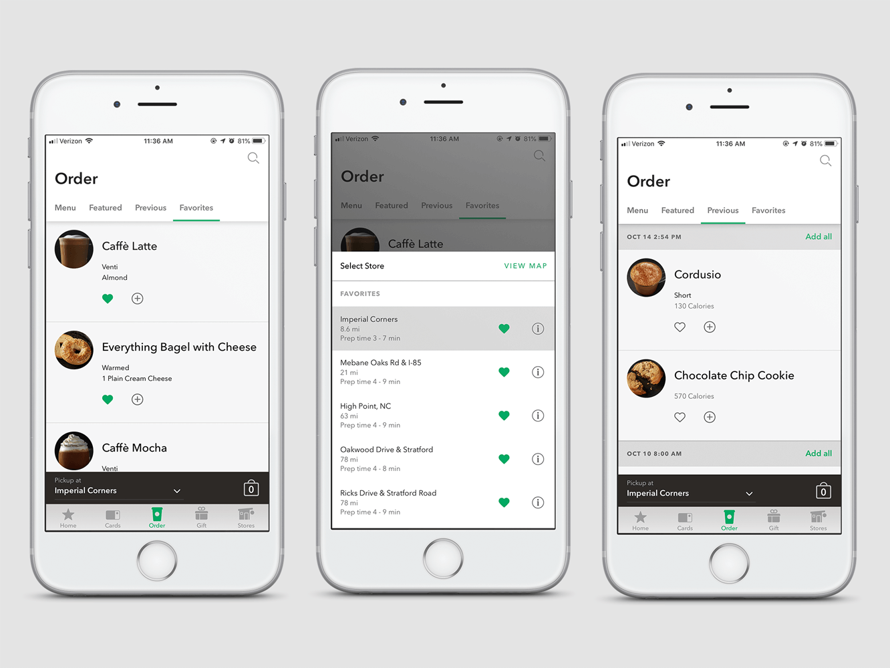
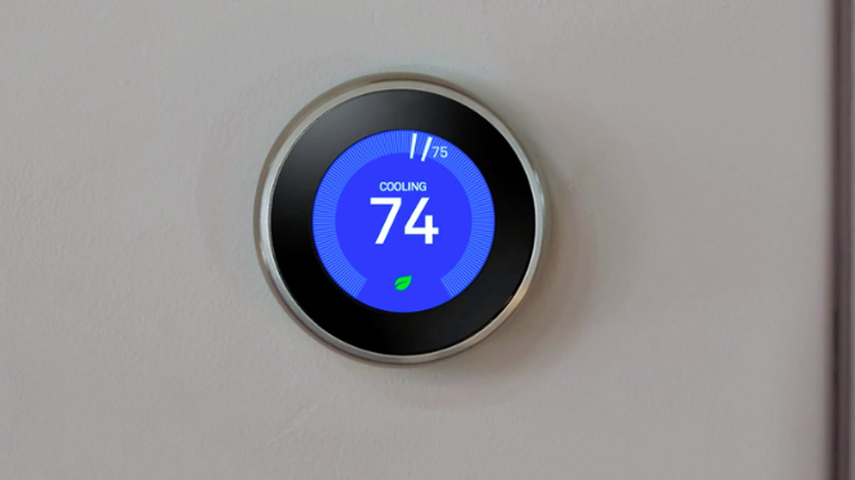
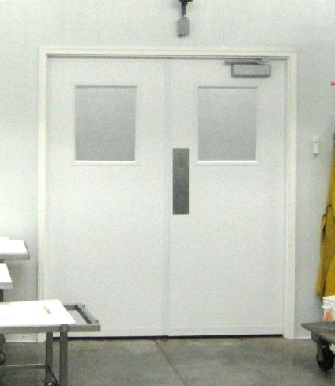
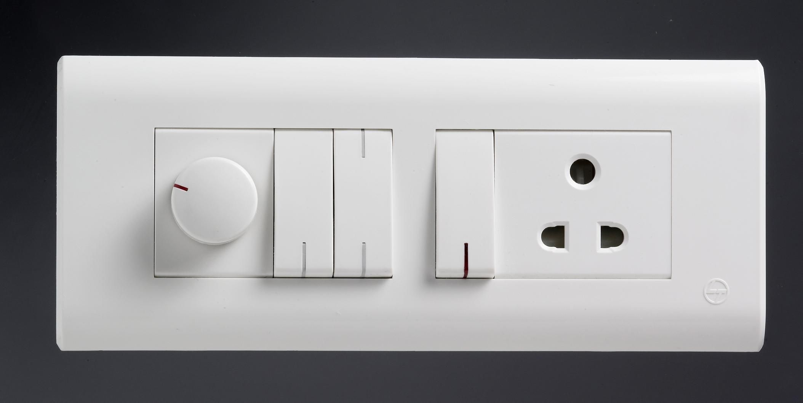

A good user interface design should have the following characteristics:
I use the Starbucks app on my iPhone atleast once a week, it is a smooth experience and has a very user friendly interface. Starbucks uses smart personalization in their mobile app for online ordering by understanding users’ purchase histories and patterns.
The app is really easy to use for first time users. The particular aspect of this overall interface design that I find good is the bottom navigation bar and the items menu. As you can see from the picture above, the bottom navigation bar has five sections, labeled clearly with their respective items with logos. While using the app to order something, it is easy to scroll through the menu and switch between the different tabs once the order has been placed. This makes the user interface simplistic. Scrolling through the menu, each item has a small picture which makes the interface look aesthetic and the user can easily add the item to their cart by pressing the "+" button. The app saves previusly ordered items, therefore, for most people, it is easier to pick what you want from a list of your previously ordered items than from a full menu.
I have the Nest Thermostat at my house and I love how the design is simple and minimalistic. The Nest Thermostat is a smart thermostat which is programmable, and a self-learning Wi-Fi-enabled thermostat that optimizes heating and cooling of homes and businesses to conserve energy.
The Nest has a invisible design. Good design is invisible—meaning the user doesn’t notice the design while they are using it. This allows the users to only focus on the task at hand. As you can see from the picture above, the Nest has a simple and asthetic design interface. The interface is not clustered like other thermostats available in the market, where it gets hard to differentiate between cooling and heating. The Nest has a simple and easy to use interface containing the current temperature in the middle and the backlight changes to blue or orange according to cooling or heating. Being a smart thermostat it has features like auto cooling/heating to conserve power and uses learning algorithms to allow their thermostat to set itself without being programmed by the user.
An interface having a bad design usually has the following mistakes:
This a very common example of a bad interface design that we encouter in our day-to-day lives. Door handles are a part of our everyday lives, so it is important for a door handle to have a good design. Trying to push a door that has “PULL” written above it and to pull a door that has “PUSH” over it. This is a hard to understand design that confuses the person trying to open the door. The door having handels that says "PUSH" is a bad design since these doors have a door handle attached to it, and the natural human instinct is to pull it. This is a common design and we have been using such design for very long time, hence we confuse ourselves this with pull and finally ending up pushing the door which says "PULL" and vice versa.
A way to improve this bad design would be to put a door handle at places where you want to pull the door and keep a plain door with “PUSH” message wherever a push is required.
The following picture shows a better design example of the door:
This is a common bad design example of electrical switches. Although this is design is an old convention, it is still being used in many places. I had these switches in my old house in India. This bad design is an example of a clumsy and hard to understand layout. It is very hard to tell which switch is for the lights, devices or fans, and what way they turn off and on, unless a user tries to use them. The problem with these switches is that they have no mapping. Which means, you cannot tell what the switch is going to do without actually switching it on. The user has to keep pressing the switches to find out what device the switch is mappped to. A common problem we had in our house in India was whenever a light bulb used to burn out, it was pretty much impossible for the electrician to tell what switch is for the bulb, unless the electrician used a tester to test the electrical output.
This is a better design of an electrical switch, it is self explanatory:
